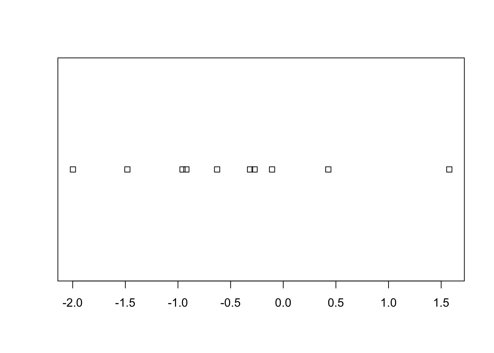
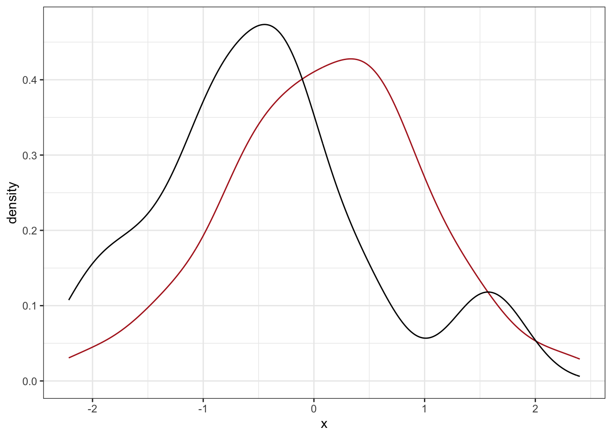
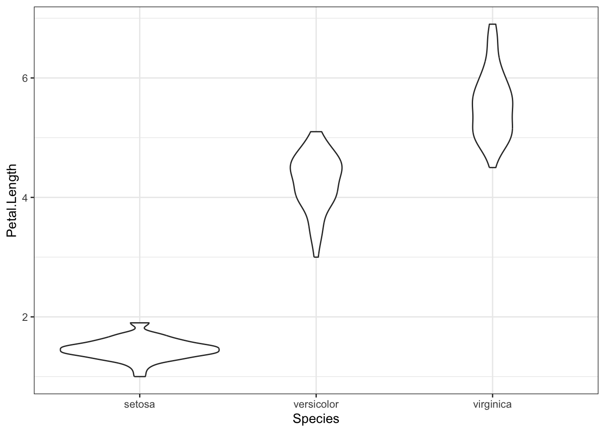
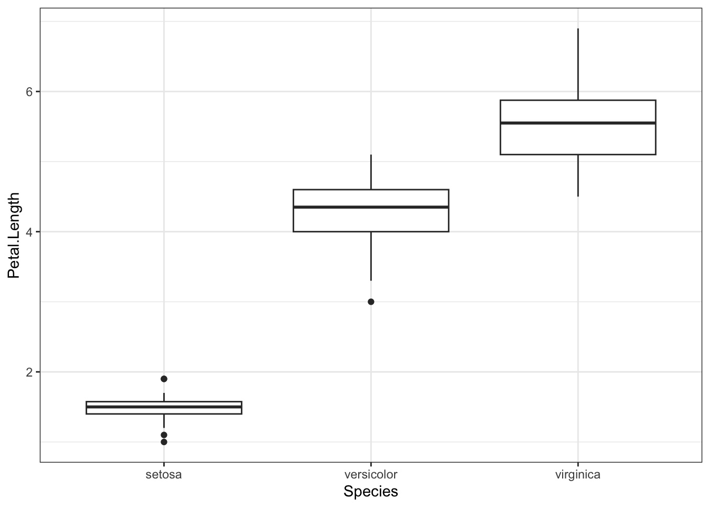
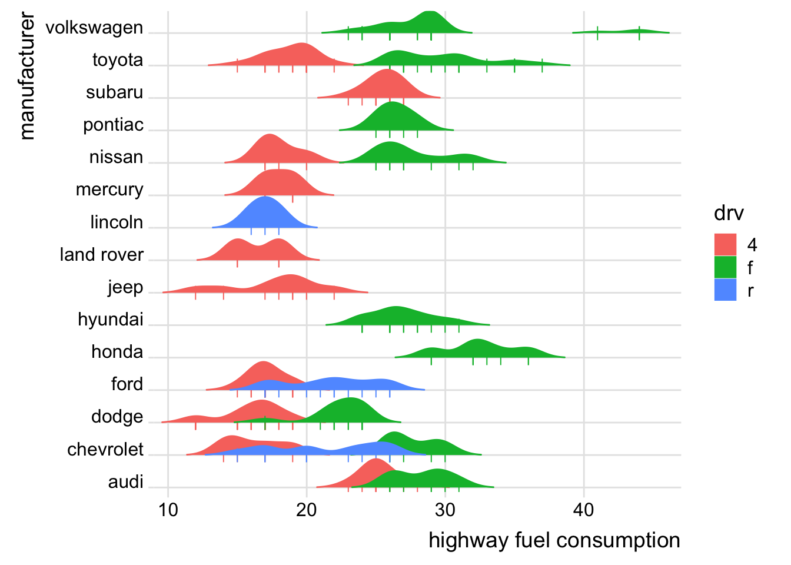
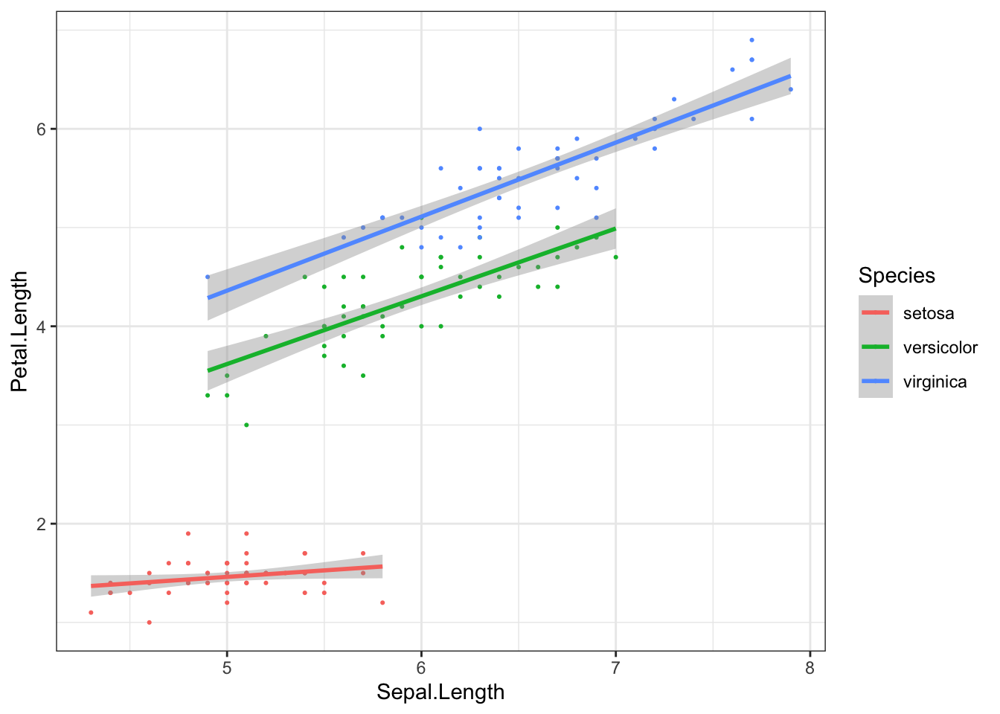

The following should be taken as recommendations, at your own responsibility. Statistics is complicated and most often there is no single best way of doing it. Neither is there a single correct answer.
10.1 Data structure
For analysis in R often the tidy format is best for plotting data in ggplot.
Tidy data: each row is an object of measurement (what is measured) and each column is a single variable that is measured. Different types of objects of measurement (mouse, human) go into separate tables. If there are several measurements per object of measurement (time points, etc), then there are several rows for every object of measurement, and a separate ID variable.
In this table we have 2 objects of measurement (2 people), A and B, both have given 2 cholesterol measurements a year apart, plus there are weight data that have been measured once and data on the sex (male or female). This is tidy data, which is optimized for visualization with ggplot2.
For biological data, other formats are often required for compatibility with specialized analysis packages.
10.2 EDA - exploratory data analysis
The goal is to check for general features of data (range, variation, distribution), as well as surprising and alarming features, like impossible values and other outliers. But also check possible co-dependencies in data by looking at co-variation between 2 or more variables. So EDA checks the data quality (and by this, the quality of the experiment and/or data collection), but it also tries to form a first impression about anything scientifically interesting in the data. EDA aslo gives hints about possible routes for data pre-processing for formal modeling.
Always start your analysis by plotting out the data, and simple dependencies. Never start by formal modeling of the data.
Visulizations of one-dimensional continuous data in the order or increasing information loss:
strip chart plots out single datapoints in one-dimensional data (a single variable). No information loss.

A strip chart of normal data, n=10
histogram plots out single-dimensional data with loss of information. The shape of the histogram depends on arbitrarily set bin width. Therefore, it is often a good idea to try different binwidths and see, what happens.
two histograms of normal data, n=10 and n=100 (red)
density plot is a smoothed histogram whose y-axis is normalized into probability scale. The area under the density plot equals one. Violin plot is another form of density plot.

density plots of same data as before
For comparisons of several continuous data distributions:
Individual data points with medians (preferable) and/or means, shown as bars. This should be your default representation when neither the sample size n or the number of comparison k is not large. For n < 10 and k < 10, this is nearly always the best option. There is no information loss! Also, it is possible to superimpose standard deviation/standard errors/confidence intervals.
For at least moderately large n (>30, say) and small k (2-4, say), superimposed histograms or density plots are a good choice.
For at least moderately large n and moderate k (10-30, say), violin plots do the trick

violin plot of iris data
For at least moderately large n and fairly large k (20 - 50, say), consider box plots. Box plot presents the median, 25% and 75% quantiles and (typically) whiskers that strech for 1.5 times interquartile range (until the last datapoint that falls inside 1.5xIQR). Datapoints outside 1.5 x IQR are shown separately as outliers. Box plots lead to largest information loss, but can be a good option, if one wants to show many distributions (many variables) side-by-side.

box plot of iris data
For at least moderately large n and large k (>30), consider joy plots, a.k.a. ridge plots.

A joy plot of fuel consumption of cars of different producers and drives. Individual cars are shown as ticks.
For examining co-variation in continuous data:
xy scatter plots, plus linear regression fit. To this one can add dimensions by stratifying by color of the points and regression lines (either for categorical or, less preferably, continuous stratifying variables), by shape of the points and regression lines (for categorical stratifying variables). In Fig … we see a 5-dimensional data representation in two-dimensional space. As you can see, some dimensions/variables are easier to grasp visually than others, depending on the geometric representation of a variable.
scatter plot of 2 measured variables of 3 Iris species. Each point corresponds to an individual plant. Point size indicates sepal lenght of the plant and opacity indicates sepal width.
To plot more than about 4 dimensions of data, consider using dimension reduction techniques, like principal component analysis (PCA) and its relatives (tSNE for large datasets with non-linear dependencies, for example). When you do use them, understand that they are harder to interpret and can be seriously misleading. Dimension reduction requires great care and detailed knowledge about the assumptions behind each technique.
A psychological note: Human cognition is good in accurately perceiving differences in bar lengths that are anchored at a common starting point. We are lousy in perceiving differences in areas, in angles, and in color saturation/intensity. So avoid, as much as you can, comparisons through circle diameter or area (in addition, in published work these are usually not differentiated to the reader).
10.2.1 What to do and what not to do in plotting data for publication.
While EDA you are doing for your own consumption, data is also plotted for publications, and there the goal is not to find new stories, but to present the ones that you have already made up. Such figures are presented to further the storytelling. This means that graphs are no longer neutral, but try to convince the reader of the validity of a made-up story. Like an official photograph of a sex symbol, graphs can be deceptive!
Do not use pie charts to show proportions of a whole. In fact, never use pie charts at all. To visualize proportions, use bar plots in the range 0…1.
For continuous variables, consider avoiding bar plots. Just plotting the means as dots or line segments is often visually better. Then its also easier to include individual data points
When the x-axis is continuous, prefer line plots. If intermediate points on the x axis between the measured points are scienifically possible, use the line graph, rather than bar plots.
Be careful with plots with two distinct y-axes. They are controversial and can often deceive. Use of two y-axes is not controversial, when the two axes are transformations of each other (like Fahrenheit and Celsius).
Remember that by choosing the ranges of y axis (but also the x-axis) you can make the effects seem larger or smaller to human perception. Even the aspect ratio of the graph can make a great difference in terms of perceived slopes. Use this power responsibly!
Do not superimpose straight lines over non-linear associations. Use loess-lines instead (like the geom_smooth function with default settings).
In general, when making publication-quality graphs pay attention to how much of the ink in the graph is actually showing data (like lines, dots, et al.), versus other elements of the graph (like borders, shading, axes with their ticks and whatnot). You want this ratio to be rather large. Avoid focusing readers to elements of the graph that are not directly needed for understanding the data. For this reason a sucessful black-and-white graph is better than one in grayscale, which in turn is better than a colour graph. In the end, your goal is to make the reader understand, what you want to say with a graph, in a shortest possible time. Of course, this does not mean that graphs cannot be complicated and take a long time to ingest. They can, if you do not have a better choice.
10.3 Data summaries
If you are graphing individual datapoints, then summarising the data by the median (which is also graphed) is the safest bet, because the mean (arithmetic mean) becomes hard to interpret for non-symmetrical data distributions. The median always has the same interpretation as the data point, from which half the data is larger and half is smaller.
The most likely datapoint is not the median, but the mode. The mode is often harder to estimate with any precision than the median or the mean. The mean is more efficient than the mode or the median, in the sense that one can build narrower confidence intervals around the mean than the median. But this does not change the fact that median often makes more intuitive sense. In fact it is hard to imagine a situation in biology (although not in economy) where the mean makes better conceptual sense than the median.
For log-normally distributed data (and a lot of biological data are log-normal) the geometric mean carries the same meaning in the original scale as the arithmetic mean in the logarithmic scale. The geometric mean should be accompanied with multiplicative standard errors.
For description of central tendency use mean for symmetrical distributions, but the median for most datasets you come accross.
For summarising data variation the most common measure is standard deviation (SD). SD is defined conditionally on data distribution. For most distributional models used in biology one can calculate the interval, which encompasses 68% of the area under the peak. 1.96 SD-s cover 95% of the area under the peak. This interval is the SD. So, for normal, lognormal and many other distributions there are different algorithms that give you the SD. The usual equation for SD that is thaught at shool applies for the normal distribution.
A close relative of the SD is the Standard Error of the Mean (SEM). When we take a random sample sized n from a population then 68% of its individual datapoints fall within the interval \(mean +/- SD\). But when we take many such samples with size n, and calculate the mean for each one of them, then 68% of these means fall within the interval SD divided by square root of n (centered on the mean of the means, or the combined mean of all the samples). This new measure \(\sqrt n\) is the SEM, which is a measure of our uncertainty about our estimate of the mean.1 If n is large, then 1SEM = 68% CI, 1.96SEM = 95% CI and 3SEM = 99% CI. In biology, n is ususally not large enough for this simple conversion; also note that, even with large n, presenting on your figures 68% CI-s is probably not what you really want to do.
An alternative to SD is the MAD - the median absolute deviation. If SD is normally calculated as \[SD = \sqrt{\frac{\sum(x_i - \hat x)^2}{n-1}}\]
then mad is \[MAD = \frac{\sum\vert x_i - \hat x \vert}{n}\]
The MAD is both more intuitive and less sensitive to outliers (note the lack of the squaring operator). However, it does not have the neat mathematical properties of the SD (remeber the SEM and the CI).
As a convention, mean and SD should be used together, as median and MAD should be used together.
Another useful summary of data variation is the interquartile range (IQR). This is usually geven as 5 numbers: the minimum value – 25th percentile – median – 75th percentile – maximum value. So the IQR really covers half of the data around the median (this is exactly what the box in a boxplot does).
Beware of summarising data via min and max, as these depend on sample size. The more data you have, the further min and max tend to creep from the median. For the same reason, beware of estimating population distribution from the shape of the data distribution, as even highly non-symmetric distributions can appear near-normal with moderate sample sizes. Statistical normality tests should therefore be avoided (especially as with large n-s they always provide small p values, suggesting non-normality even with approximately normal data).
10.4 Confidence intervals
SD-s show data level variation. As a rule, you should not put SD on a graph with data points shown (because it does not add much). Rather use it in text like this: mean (SD).
SEM indicates uncertainty around your estimate of the mean, but it should not be put on a figure or directly interpreted.
95% CI means (in its Bayesian interpretation) that you are 95% certain that the true population mean lies within this interval.2
A p value of 0.05 means that the 95% frequentist CI just barely touches the zero effect (assuming that \(H_0\) is defined as a zero effect). Likewise, p = 0.11 means that the 89% CI touches the zero effect.
If you want to show uncertainty around your estimate of the mean, use CI for the mean. If you want to show uncertainty around your estimate of the effect size (mean1 - mean2), then show the CI for the effect, not two CI-s for each mean!
There are continuous CI-s that look like this.

Continuous CI-s or confidence regions
Do not use discrete CI-s where you can model continiuous ones, as the discrete ones are less efficient and harder to interpret.
You can estimate the difference of slopes with 95% credible intervals like this:
So any change in sepal length is predicted to have a smaller effect on petal length in I. setosa than it does in I. versicolor. This difference is somwhere between 0.3 and 0.8 units. This is quite a large difference in slopes (their absolute values being in the same range).
P value is the probability of encountering your sample data or more extreme data, if we suppose that there really is no effect.
P value is in the probability scale (0…1) and it tries in effect to answer the question of how likely it is to see data like yours, assuming that there is actually no true effect. A large p value can be seen as a warning that your sample effect migth well be a random sampling error, which is not indicative of a “real” effect. Sample error is not the only possible explanation for a large p value, but as it is so very pertinent to interpreting ones results scientifically, it can rarely be ignored. A small p value is different in that while it can also mean several things, its much harder to convert into action.3 P value says nothing about the likelihood that the effect, which you see, might be bias and it says pretty much nothing about the actual size of your effect. Most importantly, p value does not give the probability that there is no effect (that the null hypothesis is true), and neither gives it the probability that some scientifically interesting hypothesis is true or false. Thus the direct interpretative use of raw p value is quite limited.
Statistical significance is a concept that uses p values as input and actually does convert small p values into action. >If your p value is less than some arbitrary value, like 0.05, and if you then claim that your result is “statistical significant”, then in the long run 5% of experiments with zero true effects are classified as “significant”.
The interpretation of “significance” is (i) over the long run, rather than about a specific experiment, and (ii) it depends on the fraction of true null experiments (the ones with zero effect) from all experiments that were done.
The multiple testing problem – If you do over some time or experimental system or field of study k independent tests of k independent samples, and call all tests, whose p<0.05 “significant”, then \(p_{corrected} = p/k\). This is the Bonferroni correction, which fixes the familiy-wise type I error rate at the level p. Presenting any results whose p/k < 0.05 as “significant” has the same meaning as presenting a p value from a single test, whose p < 0.05 as “significant”. Thus we fix the familiy-wise type I error rate at the level p. Unfortunately, this correction leads to a serious loss of sensitivity (it increases the frequency of type II errors). To mitigate this problem, a host of compromise procedures, like sequential Bonferroni, has been developed. These corrections result in a higher corrected p value, which no longer fixes the type I error level at 0.05, but lead to a smaller drop in sensitivity. Maybe the most serious aspect of the multiple testing problem is that there is no consensus about what constitutes a family of tests. It could be multiple tests done within a single experiment (like measuring the level of 20 000 mRNAs from a sample of 3 biological samples), or all experiment done by you over your lifetime, or all experiments done by various groups within the confines of a single well-defined experimental system, or whatever. Perhaps the best recommendation that can be given is to record and publish all calculated p values. But even this is far from enough, as it has been sucessfully argued that not only the tests that were done, but also those that would have been done, had data been different, count in the family k.
Multiple testing problem presents a very strong argument for abandoning the very concept of “statistical significance” as unworkable in scientific practice. The alternative approach entails Bayesian estimation of sample means and effect sizes, accompanied by measures of estimation uncertainty, which are often presented in the form of 95% credible intervals. Within this approach false alarms are dealt by the prior structures and by using multi-level modeling.4
Currently, the almost only sensible use of p values would be experiments that do at least hundreds of parallel measurements of each sample (that is, omics experiments in biomedicine). Then we can use the p values as input for checking the quality of the experiment (by p value distribution), to calculate the fraction of true null effects (using the shape of the p histogram), to calculate individual q values, and even the prospective power of the experiment. The idea here is not to actually interpret p values, but to use them as input to further calculations, which might result in better interpretable statistics.
if a p value indicates P(data I H0), then a corresponding q value indicates P(H0 I data).5
Frequentist CI have a different, and arcane, interpretation, but they are nevertheless often numerically similar to the Bayesian CI (and when not, Bayesian CI usually wins).↩︎
It can mean a large sample size, a low variation, a large true effect, or a large bias.↩︎
There are also frequentist confidence intervals, which are mathematically consistent with p values (a 95% CI can be defined as a range of non-significant p values, which treat the sample mean as the null hypothesis). These intervals should also corrected for multiple testing, so in this respect they have no advantage over the p value.↩︎
A q value estimates the probability that the effect is exactly zero, if we see sample data that is similar to your data. Its still a mouthfull, but is at least getting closer to what one might want from a statistic. Each q value is calculated, using the Bayes theorem, from the corresponding p value and the estimated fraction of true nulls, which in turn is calculated from all the p values in the experiment (we need at least hundreds of them).↩︎